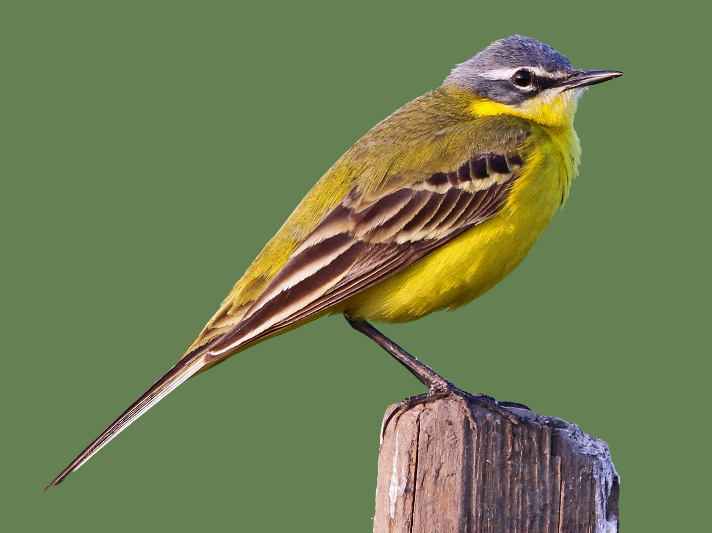
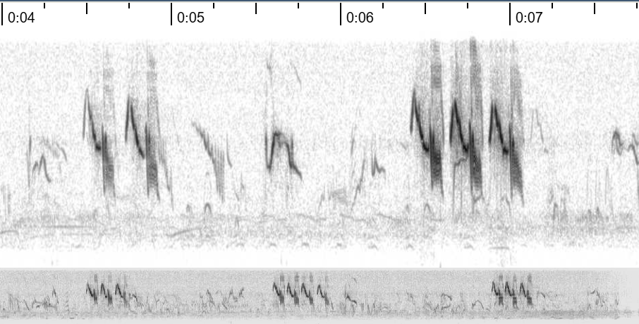

Bird Sound Synthesizer ASM
Reproduce the sound of real birds that live in Saudi Arabia.
Why this project
Birdsong is a tiny signal-processing problem that nature already solved: a sequence of frequency sweeps, steady tones and silences, timed almost perfectly and repeated call after call. In this project you don't get a made-up target to hit — you pick a real bird that's actually been recorded in Saudi Arabia, read its call off a spectrogram yourself, and reproduce it on the 8051 with nothing but a passive buzzer, two timers and a data table.

See it working
A short demo of a finished stage 2 submission: button press, buzzer, matching LED.
Overview
| Released | 21, September |
|---|---|
| Stage 1 due | 4, October |
| Stage 2 due | 11, October |
| Work in | Groups of 2–3 |
| Hardware | Development board only: passive buzzer, push buttons K1–K4, LEDs D1–D4 |
| Deliverables | Stage 1: .asm source, checkpoint demo and a one-page note.
Stage 2: commented .asm source, live demo, a short specification note, and oral questions answered
individually.
|
| Grade | One grade out of 100, awarded at stage 2. Stage 1 is a required checkpoint. |
| Topics | Bit I/O and buttons · square waves from a delay loop · timer modes and reload values · polling a timer overflow flag · timers as a time base · lookup tables in ROM · reading a spectrogram |
The two stages
The project is built in two stages. Stage 1 gets sound out of the buzzer with the simplest method there is, so that you know your buttons, your buzzer and your pin assignments all work. Stage 2 replaces that method with hardware timers — polled, not interrupt-driven — and plays a bird call of your own choice.
| Stage | What you build | Deliverables | Due |
|---|---|---|---|
| 1 Checkpoint |
Each button plays a different simple tone on the buzzer. | .asm source · live demo · one-page note (S1–S6) |
4, October |
| 2 Final |
A real bird call of your own choosing, measured from a recording and played from a table, with the pitch generated by a polled Timer 0. | Commented .asm source · live demo · specification note · oral questions (R1–R9) |
11, October |
Stage 1 carries no marks of its own, but it must be demonstrated on time: it is the checkpoint that shows your group is on track. The project is graded once, at stage 2, out of 100. See Submission & grading.
Stage 1 requirements Checkpoint
Make the buzzer sound under button control, using only what you already know from the I/O examples. Do not use timers in this stage, and you do not need a table. The point is a clean, controllable tone and correct pin assignments.
| # | Requirement |
|---|---|
| S1 | Each of the four buttons K1–K4 plays a different tone on the buzzer. The four tones must be clearly distinguishable by ear. |
| S2 | A tone sounds while its button is held down, and stops when the button is released. |
| S3 | The matching LED (D1–D4) is on while its tone plays, and off otherwise. |
| S4 | The pitch is produced by toggling the buzzer pin in a delay loop. |
| S5 | When no button is pressed, the buzzer is silent and its pin is left HIGH. |
| S6 | You state the four frequencies you aimed for and measure what the buzzer actually produced, with a tuner or spectrogram app on your phone. |
Deliverables. Your .asm source, a live demo of S1–S5, and a note of at most
one page giving: the delay calculation for one of your tones, the four target frequencies, the four measured
frequencies, and the difference between them.
Pin assignments are on the pin map: buzzer on P2.5, K1–K4
on P3.1, P3.0, P3.2, P3.3, and D1–D4 on
P2.0–P2.3. Remove the LCD module during this project, because it shares
P2.5. LED D6 is also on P2.5, so it glows faintly while a tone plays. That is
normal.
Stage 2 requirements Final
Choose a real bird — see Choosing your bird call — and make your board play its call. The delay loop from stage 1 is replaced by two polled hardware timers, and the call comes from a data table you derived yourself instead of a table we hand you. The demo and grading are based on this list.
| # | Requirement |
|---|---|
| R1 | Pressing the button plays your chosen call once, to the specification you derived in Choosing your bird call. |
| R2 | The matching LED (D1–D4) is on while the call plays and off otherwise. |
| R3 | Holding the button does not repeat the call. It must be released and pressed again. |
| R4 | The tone is a square wave on the buzzer pin generated by polling Timer 0's overflow flag (TF0) in mode 1: reload the timer and toggle the pin each time TF0 is set, then clear TF0 yourself. No delay loops for pitch in this stage. |
| R5 | Note durations are timed with Timer 1 using a 5 ms time base, polled the same way (watch TF1, reload, clear it). |
| R6 | The call is stored as a data table in program memory and played by a routine that reads that table, not as a block of code per note. |
| R7 | When no call is playing, the buzzer is silent and its pin is left HIGH. |
| R8 | Measured pitch is within ±3% of the specification you derived from your recording. Check it with a tuner or spectrogram app on your phone. |
| R9 | You submit a short specification note: the species, a link to the recording you used, how you read the sweep off its spectrogram, your derived table, and a spectrogram of your own board's output next to the source recording's spectrogram. |
Deliverables. Your commented .asm source, a live demo of R1–R8, and the
specification note from R9. There is no full written report: every member of the group also answers oral questions about the code and their chosen bird during the demo. Bring your stage 1
program as well, because you may be asked to compare the two.
Your other three buttons may keep their stage 1 tones or do nothing.
Choosing your bird call
There is no fixed catalogue to pick from this year: you choose a real bird, get a real recording of it, and turn that recording into the sweep/rest table your program plays. Every group's specification note will look a little different, because every group is measuring a different call.
1. Find a bird and a recording
Browse eBird's Saudi Arabia region page ↗ for a species with an audio recording attached. Pick something with a call short and simple enough to reproduce on a buzzer. You'll need to reproduce its rhythm as well as its pitch.
2. Read the call off a recording
A spectrogram plots frequency (vertical axis) against time (horizontal axis), with brightness showing how much energy is at that frequency at that instant — a bright rising band is a sweep from a low pitch to a high one. Free phone apps (for example Spectroid on Android) turn your microphone, or audio played from another device, into a live spectrogram, so you can watch your recording's frequency trace directly. Trace the dominant band over each syllable of the call to get its start frequency, end frequency and duration; the silences between syllables are the rests.

Full walkthrough, worked example and app recommendations: Reading a spectrogram ↗.
Background
Making a pitch with a passive buzzer
A passive buzzer only sounds while its drive signal keeps changing. Toggling the pin every half
period produces a square wave, so a tone of frequency f needs a toggle every
T/2 = 1/(2f) seconds.
Stage 1: a tone from a delay loop
Your own code toggles the pin, so the pitch depends on how long the program takes between toggles. One machine cycle is 12 crystal periods, about 1.085 µs on this board. Work out your own timing, then measure what the buzzer actually produces.
Stage 2: a tone from a polled timer
With the 11.0592 MHz crystal in 12T mode, a timer counts 921 600 times per
second. In mode 1 it counts up from the value you load into TH0:TL0 and sets the
overflow flag TF0 when it rolls over from FFFFH to 0000H. To
overflow after N counts, load:
Mode 1 doesn't reload itself and doesn't clear TF0 for you, so your main loop has to watch
TF0, and every time it's set: toggle the pin, reload the timer, and clear the flag yourself.
Checking the flag and reloading takes time of its own, which is added to every half period, so the pitch
you measure will not be quite the pitch you calculated. Measuring that difference and correcting for it is
part of meeting R8.
More detail: Wiki: Timers · Wiki: Clock & timing.
A 5 ms time base with Timer 1
Build your table so every note is a whole number of 5 ms steps, and poll Timer 1's
overflow flag TF1 the same way to time them: reload, clear the flag, count ticks. Work out
the reload value yourself and verify it (see Milestone 1).
Storing sounds as tables
R6 asks you to describe the call as data rather than as code. How you encode a note, a rest and the end
of the call is your design decision: invent a format, document it in your source, and make one routine
play anything written in it. Constants are placed in program memory with DB and read back
with MOVC A,@A+DPTR.
Design notes
How you structure the program is entirely up to you. These are questions worth answering before you write much code, not a required design:
- Your main loop has to watch
TF0,TF1and the buttons without missing one. How will you structure that loop so nothing gets starved? - What could go wrong if you check
TF0too late — after the timer has already rolled over again? - What state are the timer, its flag and the buzzer pin left in when a note ends, a rest starts, or the call finishes (R7)?
- How will you tell a new press from a button that is simply still held down (R3)?
Register banks, the stack and program memory are covered in the 8051 Wiki. The starter template gives the pin names; everything else in it is yours to change or delete.
Milestones
Show each milestone to the lab instructor as you reach it. Milestone 0 is the stage 1 checkpoint; the rest belong to stage 2.
- Buttons and buzzer (stage 1). Each of K1–K4 plays its own tone while held, with the matching LED on, meeting S1–S6.
- Time base. Using only your Timer 1 routine, blink LED D8 (
P2.7) at 1 Hz (500 ms on, 500 ms off). Ten blinks must take 10 s ± 0.2 s by stopwatch. - Polled tone. While its button is held, the buzzer plays a steady 3000 Hz tone generated by polling Timer 0's overflow flag. It is silent otherwise.
- Your bird call. The button plays your chosen call from a table, with its LED lit, meeting R1–R9.
Oral questions
There is no full written report — only the short specification note from R9. Instead, 40 of the 100 marks come from the oral questions: at the demo, each member of the group is questioned individually about the program you submitted. Marks are given for your own answers, so every member must understand the whole program, not only the part they wrote.
You may keep your source in front of you. Expect questions of these kinds:
- Your bird. Why this species? Play the original recording and your synthesized version back to back, and point out where they match and where they don't.
- Your numbers. Where does a particular reload value come from? Recalculate it, at the desk, for a frequency the examiner names.
- Your table. Explain your encoding, then read a few bytes of your own table aloud and say what they play.
- Your polling loop. Walk through what your main loop checks, in what order, between one timer overflow and the next. Why is each check where it is?
- Your measurements. What pitch did you measure, how far was it from the specification, and what did you change?
- Change it now. Which line would you edit to make the call play an octave lower, or twice as fast? Do it, reassemble and show us.
- Break it. What would happen if this instruction were deleted, or if you stopped checking this flag here?
- Stage 1 against stage 2. What can the processor do now that it could not do while the delay loop was running?
You are responsible for every line you submit, including anything adapted from an example or written by another member of your group. "My teammate wrote that part" does not earn marks.
Submission & grading
Stage 1 is a required checkpoint: submit your .asm file and the one-page
note, and demonstrate S1–S5 in the lab. It carries no marks, but a group that misses it cannot demonstrate
stage 2 until it is shown.
Stage 2 is graded out of 100. Submit your commented .asm file, your
specification note, demo the project live, and answer the oral questions individually.
Submission method: TBA.
| Item | Points |
|---|---|
| Milestone 0: stage 1 checkpoint demonstrated on time | required |
| Milestone 1: Timer 1 time base | 10 |
| Milestone 2: Timer 0 polled tone | 12 |
| Milestone 3: your bird call played from a table (R1, R6) | 10 |
| Behaviour: LED (R2), no repeat while held (R3), buzzer idle HIGH (R7) | 8 |
| Pitch accuracy R8, checked during the demo | 4 |
| Specification note: species, recording, spectrogram reading, derived table, comparison spectrogram (R9) | 10 |
| Code quality: structure, comments, documented table format | 6 |
| Oral questions at the demo, marked per student | 40 |
| Total | 100 |
If you'd like to read further into the birds of the region once you're done: The Birds of Saudi Arabia ↗ (Saudi Aramco). Not required, just interesting.